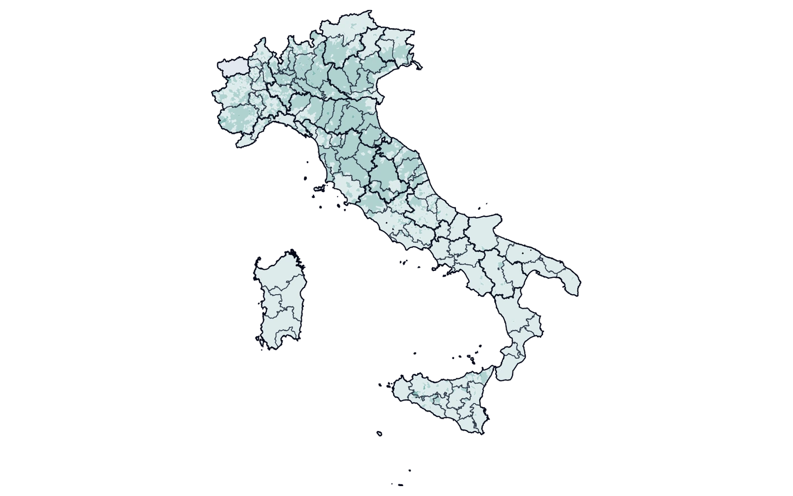

Infrastruttura elettorale nazionale · 2026–oggi
Electio
Non esiste oggi un'unica piattaforma pubblica che renda confrontabili, a livello comunale e nel tempo, tutte le elezioni italiane. Electio nasce per colmare questo vuoto: oggi copre Camera e Costituente; l'obiettivo è arrivare all'intera storia elettorale nazionale.
Scegli un'elezione e un territorio: la mappa e l'affluenza si aggiornano.
